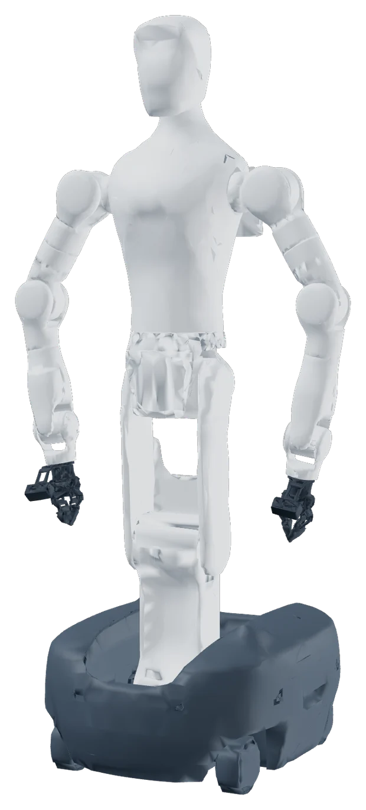

ROBOTICS · LEARNING IN MOTION
记录机器人运动控制、导航与仿真的学习和实践
从一个关节的转动，到末端的一小步。在交互中理解原理，把学习变成看得见的运动。

运动与控制
为什么转动一个关节，夹爪会沿弧线移动？雅可比又是怎么把「微小转角」换算成「末端位移」的。
运动与控制 · 感知与定位
盘挪了位置为什么不用重教？只跟随 5 个自由度、锁住滚转，以及大模型该站在哪一格。
工程与协作
以工装板目标点选择为例，看 G2 团队怎样用任务卡绑定聊天和工作树，让定位、导航、上料的交接与验收有据可查。
查看全部 30 篇笔记 →
拖动关节，观察末端在三维空间里怎样移动。
比较 18 台移动双臂本体，自定义六维权重。